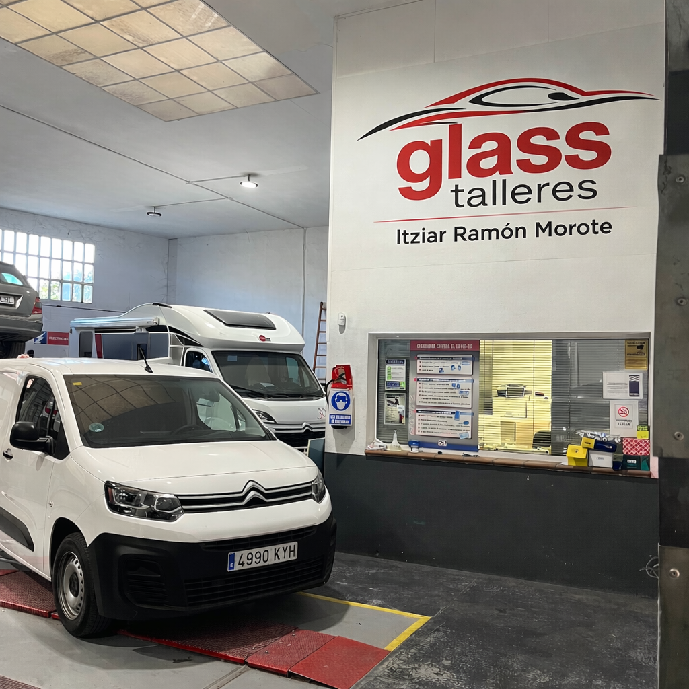
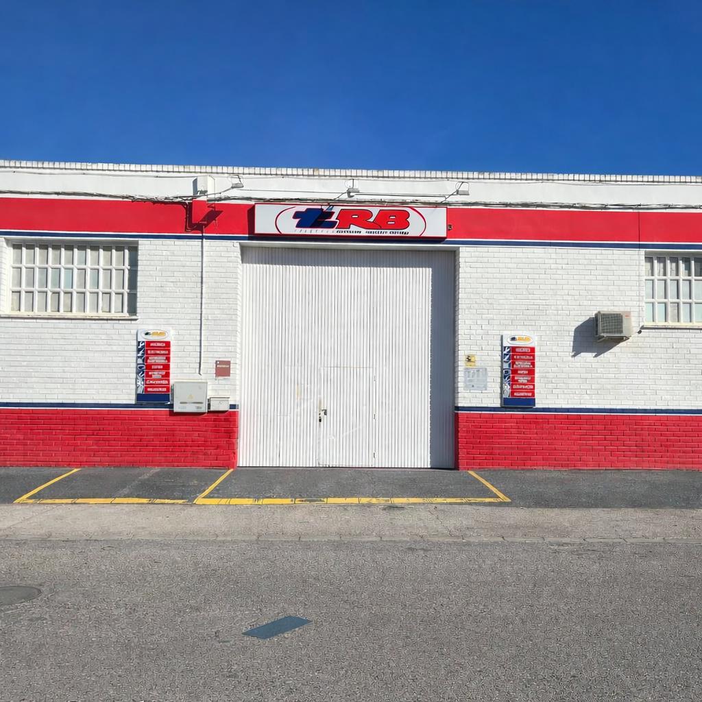

Especialistas en cambio de lunas, reparación de impactos y calibración de sistemas ADAS.
Llamar ahoraEn Glass Talleres somos especialistas en sustitución de lunas, reparación de impactos y calibración de sistemas ADAS. Trabajamos con todas las aseguradoras y utilizamos equipos profesionales para garantizar la máxima seguridad.

